AUTOMATIC TRANSMISSION UNIT > DISASSEMBLY |
| 1. REMOVE TRANSMISSION CONTROL SHAFT LEVER RH |
 |
Remove the nut, spring washer and control shaft lever.
| 2. REMOVE PARK/NEUTRAL POSITION SWITCH ASSEMBLY |
 |
Using a screwdriver, bend the tabs of the lock washer.
Remove the nut, lock washer and bolt.
Remove the park/neutral position switch.
| 3. REMOVE SPEED SENSOR |
 |
Remove the 2 bolts and 2 speed sensors.
Remove the 2 O-rings from the sensors.
| 4. REMOVE OIL COOLER TUBE UNION |
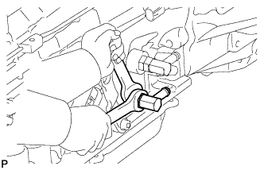 |
Remove the 2 oil cooler tube unions.
Remove the 2 O-rings from each oil cooler tube union.
| 5. REMOVE AUTOMATIC TRANSMISSION BREATHER TUBE |
 |
Remove the 2 bolts.
Remove the breather tube.
Remove the O-ring from the tube.
| 6. REMOVE AUTOMATIC TRANSMISSION HOUSING |
 |
Remove the 14 bolts.
Remove the transmission housing.
| 7. REMOVE REAR ADAPTOR TRANSFER |
 |
Remove the 10 bolts.
Remove the rear adaptor transfer.
| 8. REMOVE TRANSMISSION CASE ADAPTOR OIL SEAL |
 |
Using a screwdriver, pry out the oil seal.
| 9. REMOVE TRANSFER CASE ADAPTER RADIAL BALL BEARING |
 |
Using a screwdriver, remove the snap ring.
Using SST and a press, press out the bearing.
| 10. FIX AUTOMATIC TRANSMISSION CASE SUB-ASSEMBLY |
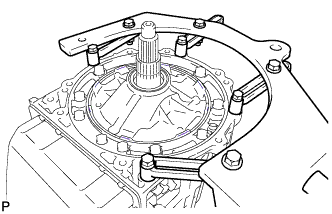 |
Install the transmission case to an overhaul attachment.
| 11. REMOVE AUTOMATIC TRANSMISSION OIL PAN SUB-ASSEMBLY |
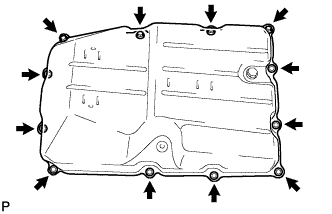 |
Remove the drain plug, 12 bolts, oil pan and gasket.
| 12. INSPECT AUTOMATIC TRANSMISSION OIL PAN SUB-ASSEMBLY |
 |
Remove the magnets, and use them to collect steel particles.
Carefully look at the foreign matter and particles in the pan and on the magnets to anticipate the type of wear you will find in the transmission.
| 13. REMOVE VALVE BODY OIL STRAINER ASSEMBLY |
 |
Turn over the transmission.
Remove the 4 bolts and oil strainer from the valve body.
Remove the O-ring from the oil strainer.
| 14. REMOVE TRANSMISSION WIRE |
 |
Remove the 2 bolts and 2 temperature sensor clamps.
Disconnect the 2 ATF temperature sensors.
Disconnect the 9 connectors from the solenoid valves.
 |
Remove the 2 bolts and pull the No. 1 and No. 2 transmission wires out of the transmission case.
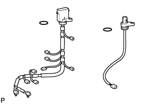 |
Remove the 2 O-rings from the transmission wires.
| 15. REMOVE TRANSMISSION VALVE BODY ASSEMBLY |
Remove the bolt, detent spring cover and detent spring.
 |
Remove the 19 bolts.
Remove the valve body assembly.
| 16. REMOVE TRANSMISSION CASE GASKET |
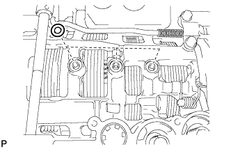 |
Remove the 3 gaskets.
| 17. REMOVE BRAKE DRUM GASKET |
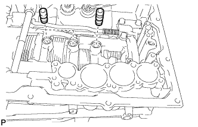 |
Remove the 3 gaskets.
| 18. REMOVE CHECK BALL BODY |
 |
Remove the check ball body and spring.
| 19. REMOVE C-2 ACCUMULATOR PISTON |
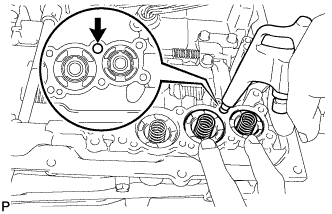 |
While applying compressed air to the oil hole, remove the C-2 accumulator piston and spring.
Remove the 2 O-rings from the piston.
| 20. REMOVE B-3 ACCUMULATOR PISTON |
While applying compressed air to the oil hole, remove the B-3 accumulator piston and spring.
Remove the 2 O-rings from the piston.
| 21. REMOVE C-3 ACCUMULATOR PISTON |
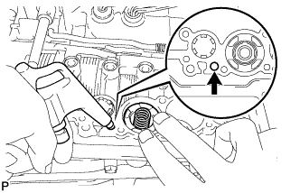 |
While applying compressed air to the oil hole, remove the C-3 accumulator piston and spring.
Remove the 2 O-rings from the piston.
| 22. REMOVE B-1 ACCUMULATOR VALVE |
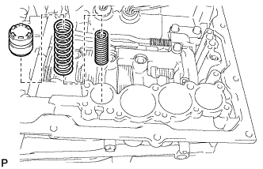 |
Remove the B-1 accumulator valve and 2 springs.
| 23. REMOVE PARKING LOCK PAWL BRACKET |
 |
Remove the 3 bolts and bracket.
| 24. REMOVE PARKING LOCK ROD SUB-ASSEMBLY |
 |
Disconnect the parking lock rod from the manual valve lever.
| 25. REMOVE PARKING LOCK PAWL |
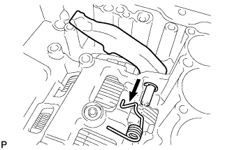 |
Pull out the parking lock pawl shaft from the front side, and then remove the lock pawl and spring.
Remove the E-ring from the shaft.
| 26. REMOVE MANUAL VALVE LEVER SUB-ASSEMBLY |
 |
Using a screwdriver and hammer, cut off the spacer and remove it from the shaft.
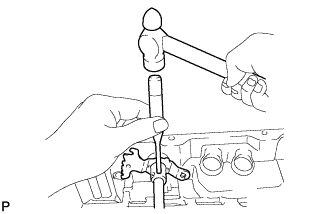 |
Using a pin punch and hammer, tap out the spring pin.
Pull the manual valve lever shaft out through the transmission case, and remove the manual valve lever.
| 27. REMOVE MANUAL VALVE LEVER SHAFT OIL SEAL |
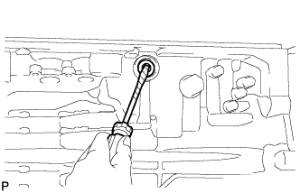 |
Using a screwdriver, pry out the 2 oil seals.
| 28. REMOVE OIL PUMP ASSEMBLY |
 |
Remove the 10 bolts.
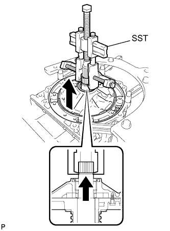 |
Using SST, pull out the oil pump.
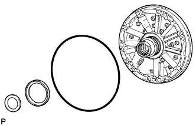 |
Remove the O-ring and 2 thrust bearing races from the oil pump.
| 29. REMOVE CLUTCH DRUM AND INPUT SHAFT ASSEMBLY |
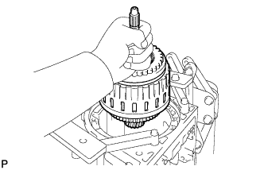 |
Remove the clutch drum and input shaft assembly from the transmission case.
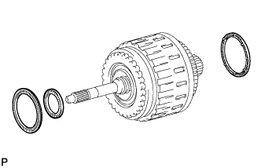 |
Remove the clutch drum thrust washer and 2 thrust needle roller bearings.
| 30. INSPECT NO. 2 1-WAY CLUTCH ASSEMBLY |
 |
Hold the reverse clutch hub and turn the 1-way clutch assembly. Check that the 1-way clutch turns freely clockwise and locks when turned counterclockwise.
| 31. REMOVE NO. 2 1-WAY CLUTCH ASSEMBLY |
 |
Remove the No. 2 1-way clutch and clutch drum thrust washer from the clutch drum and input shaft assembly.
| 32. FIX CLUTCH DRUM AND INPUT SHAFT ASSEMBLY |
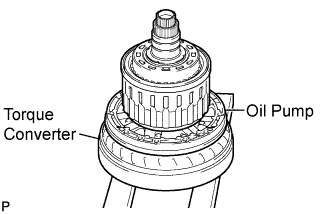 |
Place the oil pump onto the torque converter clutch, and then place the clutch drum and input shaft assembly onto the oil pump.
| 33. REMOVE REVERSE CLUTCH HUB SUB-ASSEMBLY |
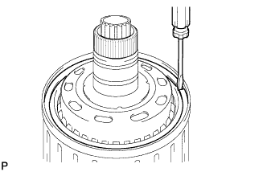 |
Using a screwdriver, remove the snap ring.
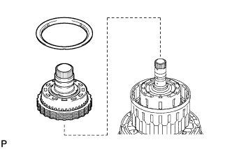 |
Remove the reverse clutch reaction sleeve and reverse clutch hub sub-assembly with the rear clutch disc set from the clutch drum.
| 34. REMOVE REAR CLUTCH DISC SET |
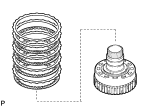 |
Remove the cushion plate, selected reverse clutch flange, 4 discs and 3 plates from the reverse clutch hub.
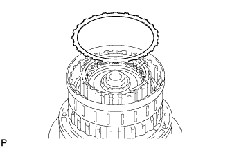 |
Remove the reverse clutch flange from the clutch drum.
| 35. INSPECT REAR CLUTCH DISC |
 |
Replace all discs if one of the following problems is present: 1) a disc, plate or flange is worn or burnt, 2) the lining of a disc is peeled off or discolored, or 3) grooves have even a little bit of damage.
| 36. INSPECT REVERSE CLUTCH HUB SUB-ASSEMBLY |
 |
Using a dial indicator, measure the inside diameter of the reverse clutch hub bush.
| 37. REMOVE FORWARD CLUTCH HUB SUB-ASSEMBLY |
 |
Remove the thrust needle roller bearing, forward clutch hub and No. 3 clutch hub thrust washer from the clutch drum.
| 38. INSPECT FORWARD CLUTCH HUB SUB-ASSEMBLY |
 |
Using a dial indicator, measure the inside diameter of the forward clutch hub bush.
| 39. REMOVE COAST CLUTCH HUB SUB-ASSEMBLY WITH NO. 4 1-WAY CLUTCH ASSEMBLY |
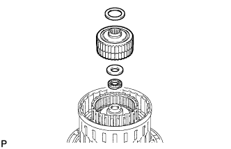 |
Remove the 2 thrust needle roller bearings, coast clutch hub with the No. 4 1-way clutch, and thrust bearing race from the clutch drum.
| 40. INSPECT NO. 4 1-WAY CLUTCH ASSEMBLY |
 |
Hold the coast clutch hub and turn the 1-way clutch assembly. Check that the 1-way clutch turns freely clockwise and locks when turned counterclockwise.
| 41. REMOVE NO. 4 1-WAY CLUTCH ASSEMBLY |
 |
Separate the No. 4 1-way clutch from the coast clutch hub.
Remove the No. 2 clutch hub thrust washer from the coast clutch hub.
| 42. REMOVE FORWARD MULTIPLE DISC CLUTCH CLUTCH DISC SET |
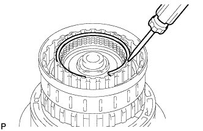 |
Using a screwdriver, remove the hole snap ring.
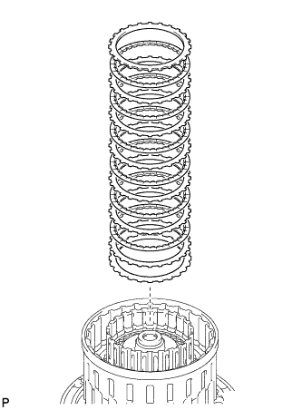 |
Remove the flange, 6 discs, 6 plates and cushion plate from the input shaft.
| 43. INSPECT FORWARD MULTIPLE DISC CLUTCH CLUTCH DISC |
 |
Replace all discs if one of the following problems is present: 1) a disc, plate or flange is worn or burnt, 2) the lining of a disc is peeled off or discolored, or 3) grooves or printed numbers have even a little bit of damage.
| 44. REMOVE COAST CLUTCH DISC SET |
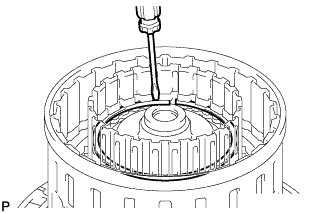 |
Using a screwdriver, remove the hole snap ring.
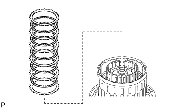 |
Remove the flange, 5 discs and 5 plates from the input shaft.
| 45. INSPECT COAST CLUTCH DISC |
 |
Replace all discs if one of the following problems is present: 1) a disc, plate or flange is worn or burnt, 2) the lining of a disc is peeled off or discolored, or 3) grooves or printed numbers have even a little bit of damage.
| 46. REMOVE INPUT SHAFT SUB-ASSEMBLY |
 |
Remove the input shaft from the clutch drum.
| 47. REMOVE INPUT SHAFT OIL SEAL RING |
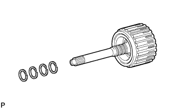 |
Remove the 4 oil seal rings from the input shaft.
| 48. REMOVE COAST CLUTCH PISTON |
 |
Place SST on the No. 1 clutch balancer, and compress the return spring with a press.
Using SST, remove the snap ring.
 |
Remove the No. 1 clutch balancer and forward clutch return spring from the input shaft.
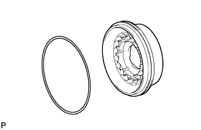 |
Remove the O-ring from the No. 1 clutch balancer.
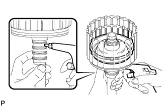 |
Hold the input shaft by hand and apply compressed air to the input shaft to remove the coast clutch piston.
| 49. INSPECT FORWARD CLUTCH RETURN SPRING SUB-ASSEMBLY |
 |
Using a vernier caliper, measure the free length of the spring together with the spring seat.
| 50. REMOVE FORWARD CLUTCH PISTON SUB-ASSEMBLY |
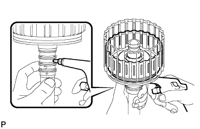 |
Hold the input shaft by hand and apply compressed air to the input shaft to remove the forward clutch piston.
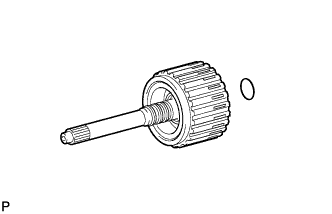 |
Remove the O-ring from the input shaft.
| 51. INSPECT FORWARD CLUTCH RETURN SPRING SUB-ASSEMBLY |
|
Using a vernier caliper, measure the free length of the spring together with the spring seat.
| 52. REMOVE DIRECT CLUTCH DISC SET |
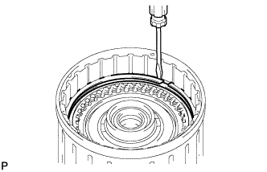 |
Using a screwdriver, remove the 2 hole snap rings from the clutch drum.
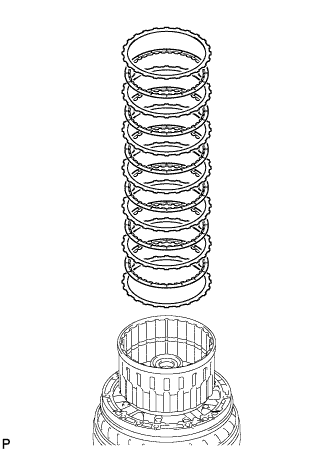 |
Remove the direct clutch flange, 6 discs and 6 plates from the clutch drum.
| 53. INSPECT DIRECT CLUTCH DISC |
 |
Replace all discs if one of the following problems is present: 1) a disc, plate or flange is worn or burnt, 2) the lining of a disc is peeled off or discolored, or 3) grooves or printed numbers have even a little bit of damage.
| 54. REMOVE NO. 3 CLUTCH BALANCER |
 |
Place SST on the No. 3 clutch balancer, and compress the return spring with a press.
Using SST, remove the snap ring.
Remove the No. 3 clutch balancer.
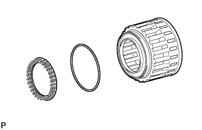 |
Remove the reverse clutch return spring and O-ring from the reverse clutch piston sub-assembly.
| 55. INSPECT REVERSE CLUTCH RETURN SPRING SUB-ASSEMBLY |
 |
Using a vernier caliper, measure the free length of the spring together with the spring seat.
| 56. REMOVE REVERSE CLUTCH PISTON SUB-ASSEMBLY |
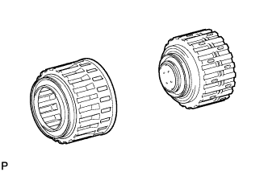 |
Remove the reverse clutch piston from the clutch drum.
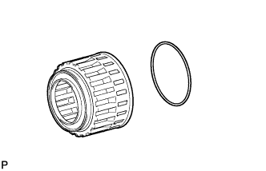 |
Remove the O-ring from the reverse clutch piston.
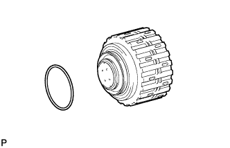 |
Remove the O-ring from the clutch drum.
| 57. REMOVE DIRECT CLUTCH PISTON SUB-ASSEMBLY |
 |
Place SST on the direct clutch piston, and compress the return spring with a press.
Using SST, remove the snap ring.
Place the oil pump onto the torque converter clutch, and then place the clutch drum onto the oil pump.
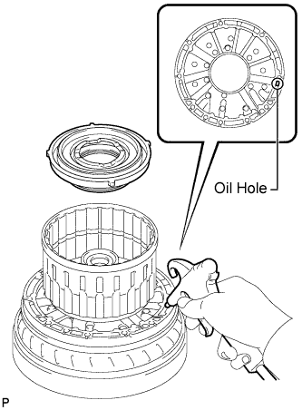 |
Hold the direct clutch piston by hand and apply compressed air to the oil hole of the oil pump as shown in the illustration to remove the direct clutch piston with the No. 2 clutch balancer and direct clutch return spring sub-assembly.
 |
Remove the No. 2 clutch balancer and direct clutch return spring sub-assembly from the direct clutch piston.
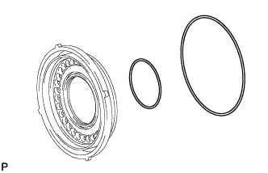 |
Remove the 2 O-rings from the direct clutch piston.
| 58. INSPECT DIRECT CLUTCH RETURN SPRING SUB-ASSEMBLY |
 |
Using a vernier caliper, measure the free length of the spring together with the spring seat.
| 59. REMOVE NO. 3 BRAKE SNAP RING |
 |
Using a screwdriver, remove the No. 3 brake snap ring from the transmission case.
| 60. REMOVE NO. 3 BRAKE DISC SET |
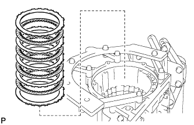 |
Remove the 2 flanges, 4 discs and 3 plates from the transmission case.
| 61. INSPECT NO. 3 BRAKE DISC |
 |
Replace all discs if one of the following problems is present: 1) a disc, plate or flange is worn or burnt, 2) the lining of a disc is peeled off or discolored, or 3) grooves or printed numbers have even a little bit of damage.
| 62. REMOVE NO. 3 BRAKE PISTON HOLE SNAP RING |
 |
Using SST, remove the snap ring.
| 63. REMOVE NO. 3 BRAKE CYLINDER WITH NO. 3 BRAKE PISTON AND NO. 3 BRAKE PISTON RETURN SPRING SUB-ASSEMBLY |
 |
Remove the No. 3 brake cylinder with the No. 3 brake piston and No. 3 brake piston return spring from the transmission case.
| 64. REMOVE NO. 3 BRAKE PISTON |
 |
Using SST and a press, compress the return spring and remove the snap ring and No. 3 brake piston return spring with a screwdriver.
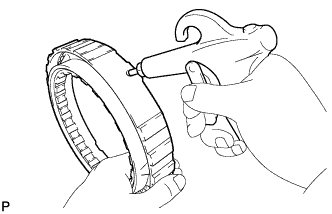 |
Hold the No. 3 brake piston and apply compressed air (392 kPa, 4.0 kgf/cm2, 57 psi) to the No. 3 brake cylinder to remove the No. 3 brake piston.
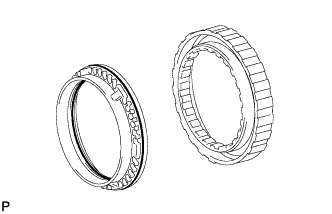 |
Remove the 2 O-rings from the No. 3 brake piston.
| 65. INSPECT NO. 3 BRAKE PISTON RETURN SPRING SUB-ASSEMBLY |
 |
Using a vernier caliper, measure the free length of the spring together with the spring seat.
| 66. REMOVE 1-WAY CLUTCH ASSEMBLY WITH 1-WAY CLUTCH INNER RACE SUB-ASSEMBLY |
 |
Remove the 1-way clutch with 1-way clutch inner race from the transmission case.
| 67. INSPECT 1-WAY CLUTCH ASSEMBLY |
 |
Install the 1-way clutch to the 1-way clutch inner race.
Hold the 1-way clutch inner race and turn the 1-way clutch. Check that the 1-way clutch turns freely counterclockwise and locks when turned clockwise.
Remove the 1-way clutch from the 1-way clutch inner race.
| 68. REMOVE 1-WAY CLUTCH INNER RACE SUB-ASSEMBLY |
 |
Separate the 1-way clutch inner race from the 1-way clutch and remove the No. 1 planetary carrier thrust washer.
| 69. REMOVE FRONT PLANETARY GEAR ASSEMBLY |
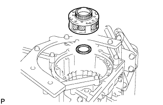 |
Remove the front planetary gear and thrust needle roller bearing from the transmission case.
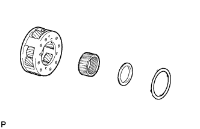 |
Remove the No. 2 planetary carrier thrust washer, thrust bearing race and front planetary sun gear from the front planetary gear.
| 70. INSPECT FRONT PLANETARY GEAR ASSEMBLY |
 |
Using a feeler gauge, measure the front planetary pinion gear thrust clearance.
 |
Using a cylinder gauge, measure the inside diameter of the front planetary gear bush.
| 71. REMOVE FRONT PLANETARY RING GEAR WITH FRONT PLANETARY RING GEAR FLANGE SUB-ASSEMBLY AND CENTER PLANETARY RING GEAR |
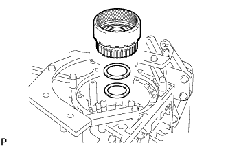 |
Remove the front planetary ring gear with the front planetary ring gear flange and center planetary ring gear from the transmission case.
Remove the thrust needle roller bearing and thrust bearing race.
| 72. REMOVE FRONT PLANETARY RING GEAR |
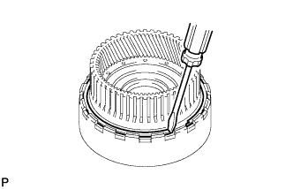 |
Using a screwdriver, remove the snap ring.
 |
Remove the front planetary ring gear from the center planetary ring gear.
| 73. REMOVE CENTER PLANETARY RING GEAR |
 |
Using a screwdriver, remove the snap ring.
 |
Remove the center planetary ring gear from the front planetary ring gear flange.
| 74. REMOVE NO. 1 BRAKE DISC SET |
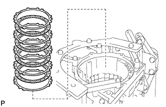 |
Remove the flange, 4 discs and 4 plates from the transmission case.
| 75. INSPECT NO. 1 BRAKE DISC |
 |
Replace all discs if one of the following problems is present: 1) a disc, plate or flange is worn or burnt, 2) the lining of a disc is peeled off or discolored, or 3) grooves or printed numbers have even a little bit of damage.
| 76. REMOVE NO. 1 BRAKE CYLINDER WITH NO. 1 BRAKE PISTON |
 |
Place SST on the No. 1 brake piston return spring, and compress the return spring.
Using a screwdriver, remove the snap ring from the transmission case.
 |
Remove the brake piston return spring and No. 1 brake piston with No. 1 brake cylinder from the transmission case.
| 77. INSPECT BRAKE PISTON RETURN SPRING SUB-ASSEMBLY |
 |
Using a vernier caliper, measure the free length of the spring together with the spring seat.
| 78. REMOVE NO. 1 BRAKE PISTON |
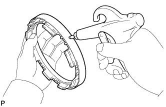 |
Hold the No. 1 brake piston and apply compressed air to the No. 1 brake cylinder to remove the No. 1 brake piston.
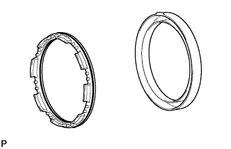 |
Remove the 2 O-rings from the No. 1 brake piston.
| 79. REMOVE NO. 2 BRAKE DISC SET |
 |
Place SST on the No. 2 brake flange, and compress the return spring.
Using a screwdriver, remove the snap ring from the transmission case.
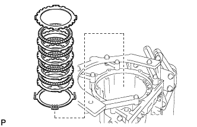 |
Remove the 2 flanges, 4 discs, 3 plates and brake piston return spring from the transmission case.
| 80. INSPECT NO. 2 BRAKE DISC |
 |
Replace all discs if one of the following problems is present: 1) a disc, plate or flange is worn or burnt, 2) the lining of a disc is peeled off or discolored, or 3) grooves or printed numbers have even a little bit of damage.
| 81. INSPECT NO. 2 BRAKE PISTON RETURN SPRING SUB-ASSEMBLY |
 |
Using a vernier caliper, measure the free length of the spring together with the spring seat.
| 82. REMOVE CENTER PLANETARY GEAR ASSEMBLY |
Remove the center planetary gear and planetary sun gear from the transmission case.
| 83. INSPECT CENTER PLANETARY GEAR ASSEMBLY |
 |
Using a feeler gauge, measure the center planetary pinion gear thrust clearance.
| 84. REMOVE NO. 2 BRAKE CYLINDER WITH NO. 2 BRAKE PISTON |
 |
Remove the No. 2 brake cylinder with the No. 2 brake piston from the transmission case.
| 85. REMOVE NO. 2 BRAKE PISTON |
Hold the No. 2 brake piston and apply compressed air to the No. 2 brake cylinder to remove the No. 2 brake piston.
Remove the 2 O-rings from the No. 2 brake piston.
| 86. REMOVE INTERMEDIATE SHAFT WITH NO. 3 1-WAY CLUTCH ASSEMBLY, REAR PLANETARY RING GEAR FLANGE AND REAR PLANETARY RING GEAR |
 |
Using SST, remove the snap ring from the transmission case.
Remove the intermediate shaft with No. 3 1-way clutch, rear planetary ring gear flange and rear planetary ring gear from the transmission case.
| 87. INSPECT NO. 3 1-WAY CLUTCH ASSEMBLY |
 |
Hold the rear planetary ring gear flange and turn the 1-way clutch. Check that the 1-way clutch turns freely counterclockwise and locks when turned clockwise.
| 88. REMOVE NO. 3 1-WAY CLUTCH ASSEMBLY |
Remove the No. 3 1-way clutch and 1-way clutch inner race from the intermediate shaft.
| 89. REMOVE REAR PLANETARY RING GEAR |
Remove the rear planetary ring gear with rear planetary ring gear flange, 3 thrust bearing races and thrust needle roller bearing from the intermediate shaft.
 |
Using a screwdriver, remove the snap ring.
Remove the rear planetary ring gear flange from the rear planetary ring gear.
| 90. INSPECT INTERMEDIATE SHAFT |
 |
Using a dial indicator, check the intermediate shaft runout.
 |
Using a micrometer, check the diameter of the intermediate shaft at the positions shown in the diagram.
| 91. REMOVE NO. 4 BRAKE DISC SET |
Remove the 2 flanges, 7 discs and 6 plates from the transmission case.
| 92. INSPECT NO. 4 BRAKE DISC |
 |
Replace all discs if one of the following problems is present: 1) a disc, plate or flange is worn or burnt, 2) the lining of a disc is peeled off or discolored, or 3) grooves or printed numbers have even a little bit of damage.
| 93. REMOVE BRAKE PLATE STOPPER SPRING |
| 94. REMOVE REAR PLANETARY GEAR ASSEMBLY |
 |
Remove the rear planetary gear from the transmission case.
Remove the 2 thrust needle roller bearings from the rear planetary gear.
Remove the thrust bearing race from the transmission case.
| 95. INSPECT REAR PLANETARY GEAR ASSEMBLY |
 |
Using a feeler gauge, measure the rear planetary pinion gear thrust clearance.
 |
Using a dial indicator, measure the inside diameter of the rear planetary gear bush.
| 96. REMOVE 1ST AND REVERSE BRAKE PISTON |
 |
Place SST on the spring retainer and compress the brake return spring.
Using SST, remove the snap ring and brake return spring.
Hold the 1st and reverse brake piston and apply compressed air (392 kPa, 4.0 kgf/cm2, 57 psi) to the transmission case to remove the 1st and reverse brake piston.
Remove the 3 O-rings from the 1st and reverse brake piston.
| 97. INSPECT 1ST AND REVERSE BRAKE RETURN SPRING SUB-ASSEMBLY |
 |
Using a vernier caliper, measure the free length of the spring together with the spring seat.